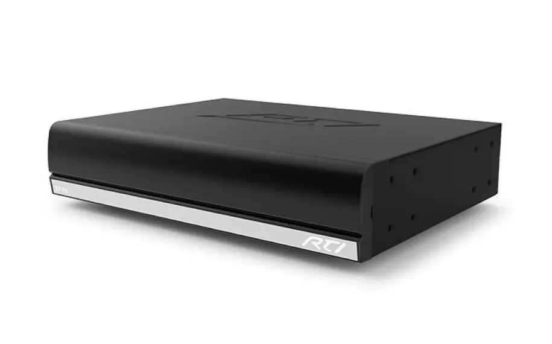

Контроллеры управления
Процессор использует обширную базу данных драйверов для облегчения интеграции устройств сторонних производителей в единую интеллектуальную систему. Расширенные возможности управления включают IP, RS-232, инфракрасный порт, реле и датчики. Разработанные для удовлетворения растущих потребностей любого проекта, процессоры RTI поддерживает всю экосистему, что позволяет легко расширять систему с использованием нескольких процессоров и полной линейки дополнительных устройств.